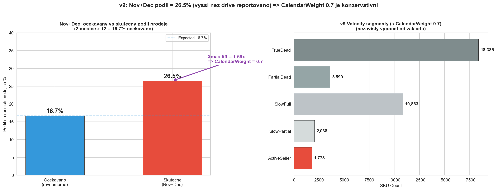
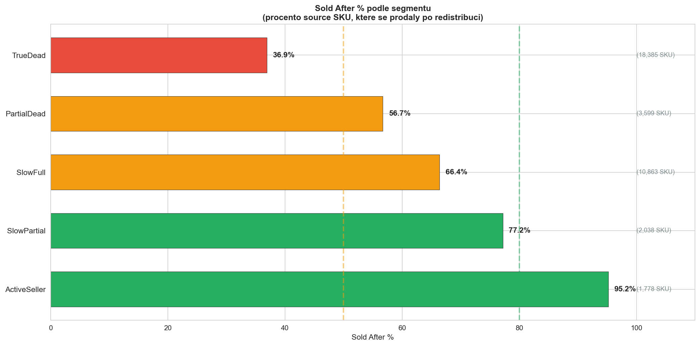
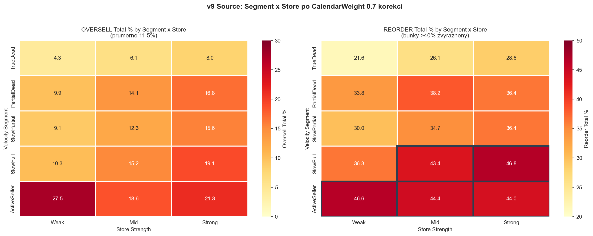
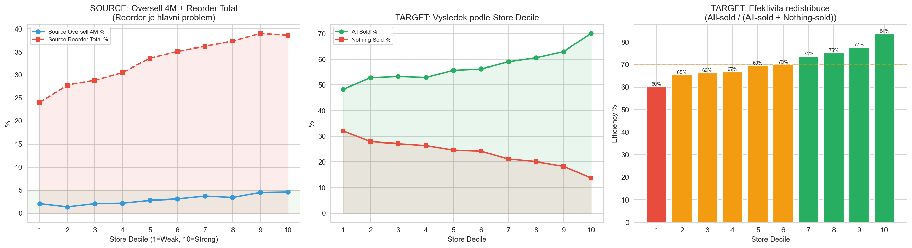
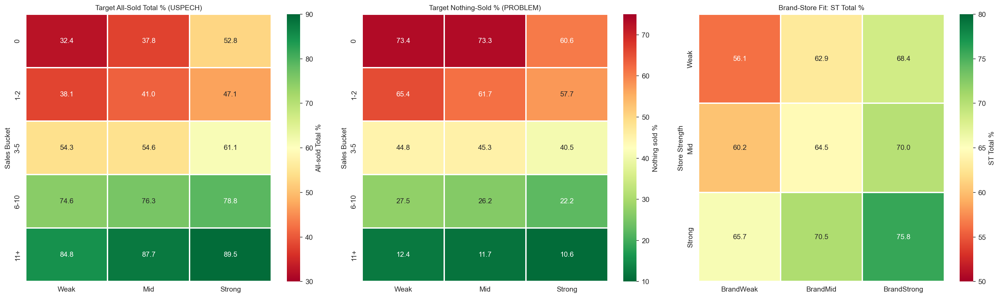
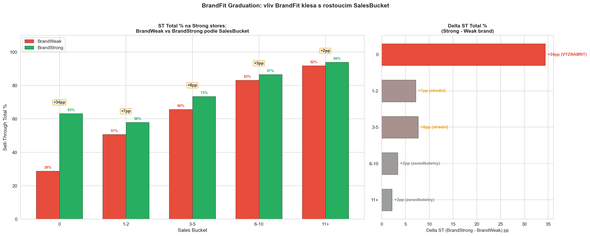
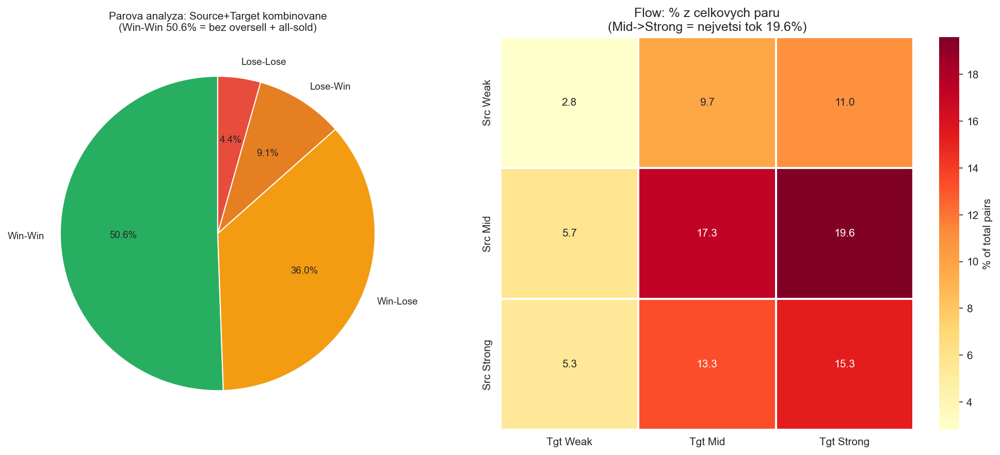
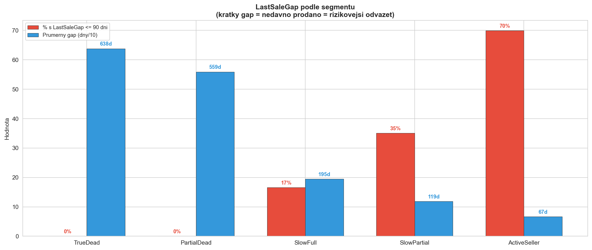
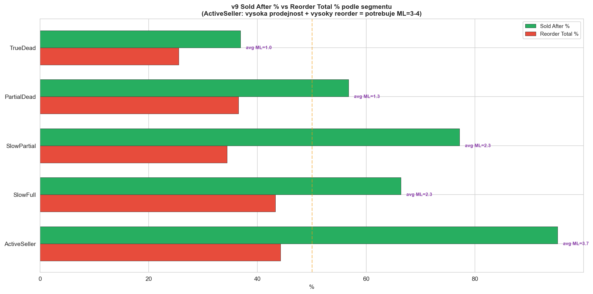

CalculationId=233 | ApplicationDate: 2025-07-13 | Generated: 2026-03-22 20:30
v9 = nezavisla analyza od zakladu. Nov+Dec podil = 26.5% (ocekavano 16.7%, lift 1.59x). CalendarWeight 0.7 je konzervativni (skutecny lift by odpovidal vaze ~0.63). Vsechny metriky pocitany nezavisle ze zadani.


| Segment | Store | SKU | Oversell T% | Reorder T% | SoldAfter% | Redist Qty |
|---|---|---|---|---|---|---|
| TrueDead | Weak | 5,233 | 4.3% | 21.6% | 32.6% | 6,245 |
| TrueDead | Mid | 8,240 | 6.1% | 26.1% | 37.3% | 10,063 |
| TrueDead | Strong | 4,912 | 8.0% | 28.6% | 40.7% | 5,990 |
| PartialDead | Weak | 940 | 9.9% | 33.8% | 48.7% | 1,125 |
| PartialDead | Mid | 1,610 | 14.1% | 38.2% | 57.9% | 2,072 |
| PartialDead | Strong | 1,049 | 16.8% | 36.4% | 62.2% | 1,467 |
| SlowPartial | Weak | 421 | 9.1% | 30.0% | 71.7% | 626 |
| SlowPartial | Mid | 800 | 12.3% | 34.7% | 72.9% | 1,192 |
| SlowPartial | Strong | 817 | 15.6% | 36.4% | 84.2% | 1,312 |
| SlowFull | Weak | 2,122 | 10.3% | 36.3% | 56.0% | 2,710 |
| SlowFull | Mid | 4,697 | 15.2% | 43.4% | 63.9% | 6,276 |
| SlowFull | Strong | 4,044 | 19.1% | 46.8% | 74.7% | 5,598 |
| ActiveSeller | Weak | 99 | 27.5% | 46.6% | 90.9% | 193 |
| ActiveSeller | Mid | 431 | 18.6% | 44.4% | 91.9% | 1,003 |
| ActiveSeller | Strong | 1,248 | 21.3% | 44.0% | 96.7% | 2,745 |


| SalesBucket | Store | SKU | ST 4M% | ST Total% | NothingSold 4M% | AllSold T% |
|---|---|---|---|---|---|---|
| 0 | Weak | 139 | 23.5% | 35.6% | 73.4% | 32.4% |
| 0 | Mid | 341 | 23.4% | 41.6% | 73.3% | 37.8% |
| 0 | Strong | 254 | 37.2% | 54.6% | 60.6% | 52.8% |
| 1-2 | Weak | 1,972 | 26.5% | 47.2% | 65.4% | 38.1% |
| 1-2 | Mid | 4,507 | 28.9% | 51.3% | 61.7% | 41.0% |
| 1-2 | Strong | 3,640 | 32.3% | 56.4% | 57.7% | 47.1% |
| 3-5 | Weak | 2,601 | 41.6% | 65.8% | 44.8% | 54.3% |
| 3-5 | Mid | 7,760 | 41.0% | 65.9% | 45.3% | 54.6% |
| 3-5 | Strong | 9,052 | 45.5% | 71.8% | 40.5% | 61.1% |
| 6-10 | Weak | 879 | 59.2% | 82.4% | 27.5% | 74.6% |
| 6-10 | Mid | 3,319 | 59.9% | 84.4% | 26.2% | 76.3% |
| 6-10 | Strong | 4,835 | 63.2% | 86.2% | 22.2% | 78.8% |
| 11+ | Weak | 178 | 73.6% | 91.9% | 12.4% | 84.8% |
| 11+ | Mid | 806 | 72.6% | 93.3% | 11.7% | 87.7% |
| 11+ | Strong | 1,348 | 77.4% | 94.0% | 10.6% | 89.5% |

| Store | BrandFit | SKU | ST Total% | NothingSold% |
|---|---|---|---|---|
| Weak | BrandWeak | 2,426 | 56.1% | 34.0% |
| Weak | BrandMid | 1,247 | 62.9% | 27.6% |
| Weak | BrandStrong | 2,096 | 68.4% | 21.9% |
| Mid | BrandWeak | 4,055 | 60.2% | 29.6% |
| Mid | BrandMid | 3,559 | 64.5% | 25.7% |
| Mid | BrandStrong | 9,119 | 70.0% | 20.2% |
| Strong | BrandWeak | 2,239 | 65.7% | 24.7% |
| Strong | BrandMid | 2,844 | 70.5% | 20.1% |
| Strong | BrandStrong | 14,046 | 75.8% | 15.4% |

| SalesBucket | ST Delta rozsah | Modifier BrandWeak | Modifier BrandStrong |
|---|---|---|---|
| 0 (no sales) | +17 to +34pp | -1 | +1 |
| 1-2 | +7 to +9pp | -1 | +1 |
| 3-5 | +6 to +8pp | -1 | 0 |
| 6-10 | +2 to +3pp | 0 | 0 |
| 11+ | <2pp | 0 | 0 |
| Typ paru | Paru | % |
|---|---|---|
| Win-Win | 21,443 | 50.6% |
| Win-Lose | 15,257 | 36.0% |
| Lose-Win | 3,841 | 9.1% |
| Lose-Lose | 1,863 | 4.4% |

| Source Store | Target Store | Paru | % |
|---|---|---|---|
| Weak | Weak | 1,179 | 2.8% |
| Weak | Mid | 4,099 | 9.7% |
| Weak | Strong | 4,661 | 11.0% |
| Mid | Weak | 2,437 | 5.7% |
| Mid | Mid | 7,315 | 17.3% |
| Mid | Strong | 8,330 | 19.6% |
| Strong | Weak | 2,256 | 5.3% |
| Strong | Mid | 5,639 | 13.3% |
| Strong | Strong | 6,488 | 15.3% |

